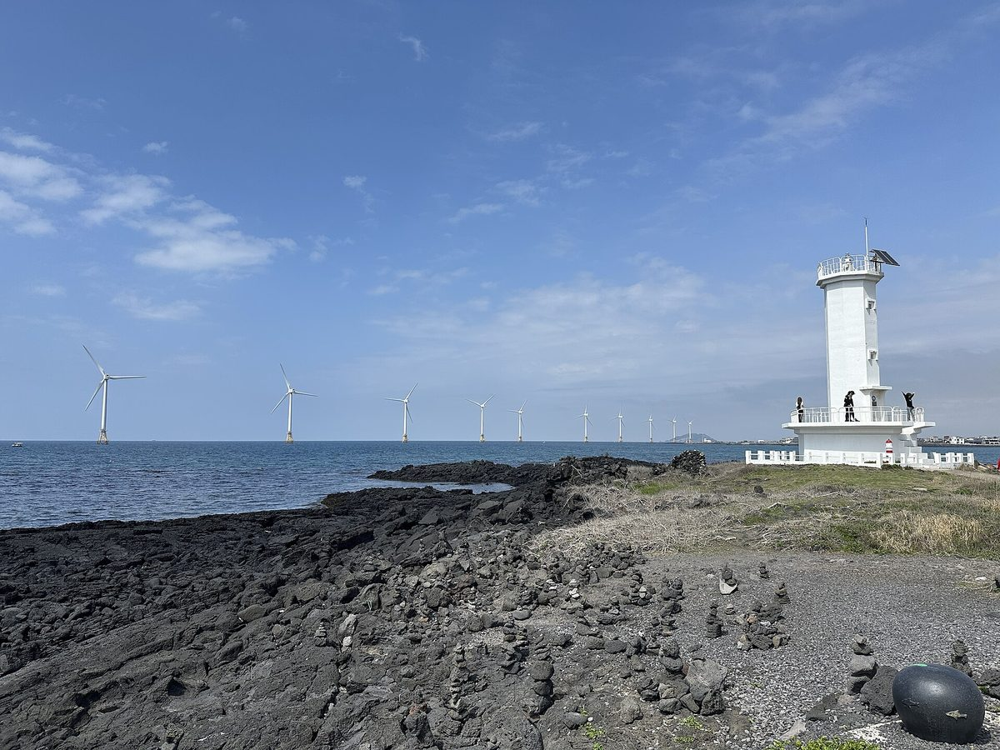

제주 재생에너지 이익, '직접 배당'과 '공공기여' 나눠 제도로…지역 기획, 상설 협의체·정보 공개·성과 지표 담은 실행 로드맵 주문

기존 풍력단지 실태 조사→시범사업→평가·보완→확대 단계 제시, 전기요금 절감액·주민 배당액·환원액·참여율로 성과 따져야…민간사업자 부담은 법적 근거부터
제주 분산에너지특구의 성과를 이어 가려면 재생에너지 사업의 주민 참여와 수익 배분을 조례·협약·정보 공개로 묶는 '제주형' 실행 로드맵을 세워야 한다는 지역 언론 기획 연재가 1일 마지막 회에서 구체적인 설계안을 내놨다. 기획은 발전시설 가까운 주민에게 돌아가는 직접 배당과 마을 공동사업에 쓰는 공공기여를 구분하고, 모든 사업에 같은 비율을 매기기보다 사업 규모·수익성·입지·주민 참여 수준에 따라 배분 기준을 정하되, 주민이 초기 투자에 참여할 수 있도록 금융 지원과 지역 협동조합 역량 강화, 취약계층 참여 보장을 함께 마련하라고 주문했다. 실행체계로는 제주도·주민·에너지 기업·전문가·공공기관이 함께하는 상설 협의체로 갈등을 조정하고, 발전사업의 수익과 비용, 주민 배당액, 환원 재원 사용 내역을 정기적으로 공개하며, 전기차가 없는 주민과 임차가구, 에너지 취약계층도 빠지지 않도록 참여 방식을 넓히자고 제안했다. 추진 순서는 기존 풍력단지와 분산에너지 실증사업의 주민 참여·배분 현황을 먼저 조사하고 경제성과 환원 효과를 분석한 뒤 기준을 시범사업에 적용해 평가·보완하고 넓혀 가는 방식이며, 성과는 설비 용량이나 투자 규모뿐 아니라 전기요금 절감액, 전력 거래 수익, 주민 배당액, 지역사회 환원액, 주민 참여율과 만족도로 따지고 목표에 못 미치면 원인을 공개하자고 했다. 비교 사례로 든 전남 신안군의 햇빛·바람연금은 2018년 10월 조례 제정 뒤 누적 수익이 2025년 10월 300억 원을 넘었지만, 기획은 연금과 인구 증가의 인과를 단정하기 어렵다며 제주가 눈여겨볼 것은 지급액이 아니라 제도화 방식이라고 선을 그었다. 다만 민간사업자에게 부담을 지우려면 법적 근거와 적용 대상, 부담 범위부터 분명히 해야 한다는 단서도 달았다.
시민에너지 관점
아일랜드는 재생에너지 지원 경매(RESS)에서 낙찰된 발전소가 생산한 전기 1MWh당 2유로를 지역 공동체 기금으로 내게 하고, 그 가운데 일부를 발전소 가까운 가구 몫으로 따로 떼도록 해 '직접 배당'과 '공공기여'를 제도 안에서 나눠 놓았다. 기준을 미리 정하면 사업자가 떠난다는 걱정이 나올 수 있지만, 금액과 대상이 정해져 있으면 사업자는 마을마다 따로 협상하는 비용과 갈등을 덜고 주민은 보상이 아니라 정해진 몫을 받는다. 그러나 배당과 기금은 사업자가 내는 돈을 받는 데 그치므로, 주민과 지역 협동조합이 처음부터 지분을 가진 주인으로 설계에 들어가야 상설 협의체와 정보 공개도 형식이 아닌 실제 권한이 된다. 제주도는 기존 풍력단지별 주민 배당·환원 실적부터 공개하고, 시범사업 대상과 성과 지표를 조례에 담을 일정을 도민 앞에 내놓아야 한다.
출처: 제민일보 2026-11-01 김봉철 원문 보기
済州の再生可能エネルギー利益、「直接配当」と「公共寄与」を分けて制度に…地元企画、常設協議体・情報公開・成果指標を盛り込んだ実行ロードマップ求める
既存風力団地の実態調査→モデル事業→評価・補完→拡大の段階を提示、電気料金削減額・住民配当額・還元額・参加率で成果を検証すべき…民間事業者への負担はまず法的根拠から
済州の分散エネルギー特区の成果をつなげていくには、再生可能エネルギー事業への住民参加と収益配分を条例・協定・情報公開で束ねる「済州型」の実行ロードマップを作るべきだとする地元メディアの企画連載が1日、最終回で具体的な制度案を示した。企画は、発電施設の近くに住む住民に渡る直接配当と、村の共同事業に充てる公共寄与を区別し、すべての事業に同じ比率を課すのではなく事業規模・収益性・立地・住民参加の度合いに応じて配分基準を定めるとともに、住民が初期投資に加われるよう金融支援や地域協同組合の力量強化、社会的弱者の参加保障もあわせて整えるよう求めた。実行体制としては、済州道・住民・エネルギー企業・専門家・公的機関がともに加わる常設協議体で対立を調整し、発電事業の収益と費用、住民配当額、還元財源の使途を定期的に公開し、電気自動車を持たない住民や賃借世帯、エネルギー弱者も取り残されないよう参加の方法を広げることを提案した。進め方は、既存の風力団地と分散エネルギー実証事業の住民参加・配分の現状をまず調べ、経済性と還元効果を分析したうえで基準をモデル事業に適用し、評価・補完して広げていくもので、成果は設備容量や投資規模だけでなく電気料金の削減額、電力取引収益、住民配当額、地域社会への還元額、住民の参加率と満足度で測り、目標に届かなければ原因を公開すべきだとした。比較事例に挙げた全羅南道新安郡の「太陽光・風力年金」は2018年10月の条例制定後、累積収益が2025年10月に300億ウォンを超えたが、企画は年金と人口増加の因果関係は断定しにくいとし、済州が注目すべきは支給額ではなく制度化の方法だと線を引いた。ただし、民間事業者に負担を課すなら、法的根拠と適用対象、負担の範囲をまず明確にすべきだという条件も付けた。
市民エネルギーの視点
アイルランドは再生可能エネルギー支援入札（RESS）で落札した発電所に、発電した電力1MWhあたり2ユーロを地域コミュニティ基金に拠出させ、その一部を発電所近くの世帯向けに別枠で確保させることで、「直接配当」と「公共寄与」を制度の中で分けている。基準をあらかじめ決めれば事業者が離れるとの懸念もありうるが、金額と対象が決まっていれば事業者は村ごとの個別交渉にかかる費用と対立を減らせ、住民は補償ではなく決められた取り分を受け取れる。しかし配当や基金は事業者が出すお金を受け取るにとどまるため、住民と地域協同組合が最初から持ち分を持つ主体として設計に加わってこそ、常設協議体や情報公開も形だけでなく実際の権限になる。済州道は既存の風力団地ごとの住民配当・還元の実績から公開し、モデル事業の対象と成果指標を条例に盛り込む日程を道民に示すべきだ。
出典: 済民日報 2026-11-01 キム・ボンチョル 原文を読む
济州可再生能源收益应把"直接分红"与"公共贡献"分开纳入制度…当地策划报道呼吁制定包含常设协商机构、信息公开和绩效指标的实施路线图
提出"现有风电场现状调查→试点项目→评估完善→推广"的步骤，应以电费节省额、居民分红额、回馈额和参与率衡量成效…向民营企业施加负担须先明确法律依据
当地媒体的一组策划连载在1日推出的最后一期中提出具体制度方案，认为要延续济州分布式能源特区的成果，就必须制定"济州型"实施路线图，用条例、协议和信息公开把可再生能源项目的居民参与和收益分配固定下来。策划主张，应区分发给发电设施附近居民的直接分红和用于村庄共同事业的公共贡献；与其对所有项目套用同一比例，不如按项目规模、盈利能力、选址条件和居民参与程度确定分配标准，同时配套金融支持让居民能参与初期投资，增强地方合作社能力，并保障弱势群体的参与机会。在实施体系上，策划建议由济州道、居民、能源企业、专家和公共机构共同组成常设协商机构来调解矛盾，定期公开发电项目的收益与成本、居民分红额和回馈资金的使用明细，并拓宽参与方式，使没有电动汽车的居民、租户家庭和能源弱势群体不被落下。推进顺序是先调查现有风电场和分布式能源示范项目的居民参与与分配现状，分析经济性和回馈效果，再把标准用于试点项目，经评估完善后逐步推广；成效不仅看装机容量和投资规模，还要看电费节省额、电力交易收益、居民分红额、地方回馈额以及居民参与率和满意度，未达目标时应公开原因。作为对比案例的全罗南道新安郡"阳光·风力年金"在2018年10月制定条例后，累计收益到2025年10月已超过300亿韩元，但策划指出年金与人口增长之间的因果关系难以断定，强调济州应关注的不是发放金额，而是制度化的方式。不过，策划也附加条件称，若要向民营企业施加负担，须先明确法律依据、适用对象和负担范围。
市民能源视角
爱尔兰规定，在可再生能源支持拍卖（RESS）中中标的电站须按每发电1MWh缴纳2欧元设立社区基金，并从中划出一部分专门留给电站附近的住户，在制度内把"直接分红"和"公共贡献"分开。有人会担心预先定下标准会把开发商赶走，但金额和对象一旦明确，开发商可以省去逐村谈判的成本和冲突，居民拿到的也不是补偿，而是事先确定的份额。然而，分红和基金终究只是领取开发商拿出来的钱，只有居民和地方合作社从一开始就作为持股的主人参与设计，常设协商机构和信息公开才会成为实实在在的权力而非形式。济州道应先公开现有各风电场的居民分红和回馈实绩，并向道民拿出把试点对象和绩效指标写入条例的时间表。
来源: 济民日报 2026-11-01 김봉철（Kim Bong-cheol） 查看原文
Jeju should write "direct dividends" and "public contributions" from renewables into rules, local series says, calling for a roadmap with a standing council, disclosure and performance indicators
Proposed sequence runs from surveying existing wind farms to pilot projects, evaluation and expansion; results should be judged by bill savings, resident dividends, community returns and participation, and any burden on private developers needs a clear legal basis first
A local newspaper series on Jeju's energy future set out a detailed design in its final installment on November 1, arguing that to sustain the gains of the island's distributed energy special zone, Jeju needs its own roadmap that binds resident participation and revenue sharing in renewable projects to ordinances, agreements and public disclosure. The series called for separating direct dividends paid to residents living near generating facilities from public contributions used for village-wide projects, and for setting distribution rules according to project size, profitability, location and the level of resident participation rather than applying one ratio to every project, alongside financial support so residents can join initial investment, stronger local cooperatives and guaranteed participation for vulnerable groups. For implementation, it proposed a standing council of the provincial government, residents, energy companies, experts and public agencies to mediate disputes, regular disclosure of project revenues and costs, resident dividends and how community funds are spent, and broader ways to take part so that residents without electric cars, tenant households and energy-poor households are not left out. The proposed sequence is to first survey resident participation and revenue distribution at existing wind farms and distributed energy pilot projects, analyse their economics and community returns, then apply the rules to pilot projects, evaluate and refine them, and expand; performance should be measured not only by installed capacity or investment but by electricity bill savings, power trading revenue, resident dividends, community returns, and resident participation and satisfaction, with causes made public when targets are missed. The series cited the "sunlight and wind pensions" of Sinan County, South Jeolla Province, whose cumulative revenue passed 30 billion won in October 2025 after an ordinance enacted in October 2018, but cautioned that a causal link between the pensions and population growth is hard to establish and said what Jeju should look at is the way sharing was institutionalised, not the payout amounts. It also added that imposing any obligation on private developers would first require a clear legal basis, scope of application and limit on the burden.
Citizen Energy View
Ireland requires projects that win its Renewable Electricity Support Scheme (RESS) auctions to pay 2 euros per MWh generated into a community benefit fund and to set aside part of it for households living near the plant, separating "direct dividends" from "public contributions" within the rules themselves. Some will worry that fixing standards in advance drives developers away, but when amounts and recipients are set, developers save the cost and conflict of negotiating village by village, and residents receive a defined share rather than compensation. Dividends and funds, however, still only hand residents money that developers choose to pay out; only when residents and local cooperatives join the design from the start as shareholders will a standing council and public disclosure carry real authority rather than form. Jeju should begin by publishing resident dividend and community return records for each existing wind farm and present residents with a timetable for writing pilot projects and performance indicators into an ordinance.
Source: Jemin Ilbo 2026-11-01 Kim Bong-cheol Read the original